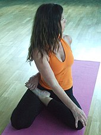

| Current pose: Bharadvaja's twist 2 | Adjacent poses: |
|
Bharadvajasana II Two sided advanced form requiring high hip mobility; one leg is bent as in Padmasana (lotus position), while the other leg is bent as in Virasana. https://en.wikipedia.org/wiki/Bharadvajasana |